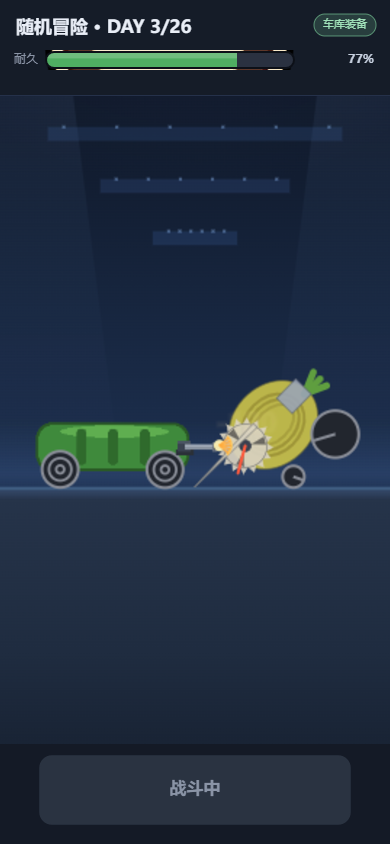
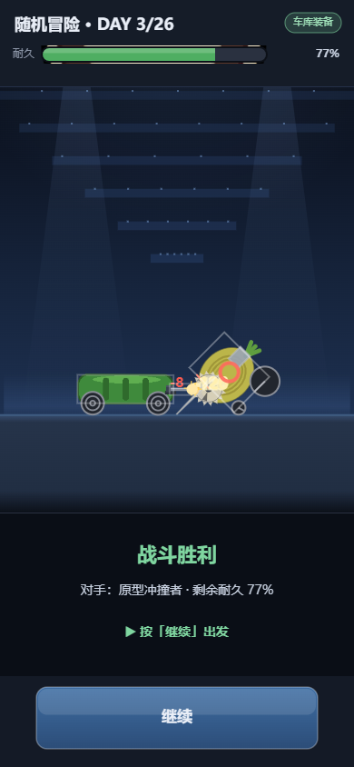
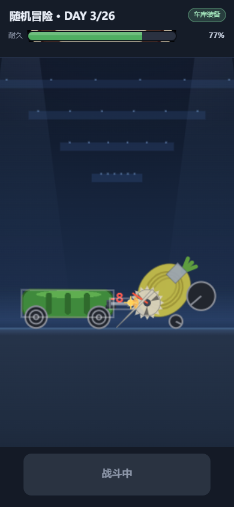
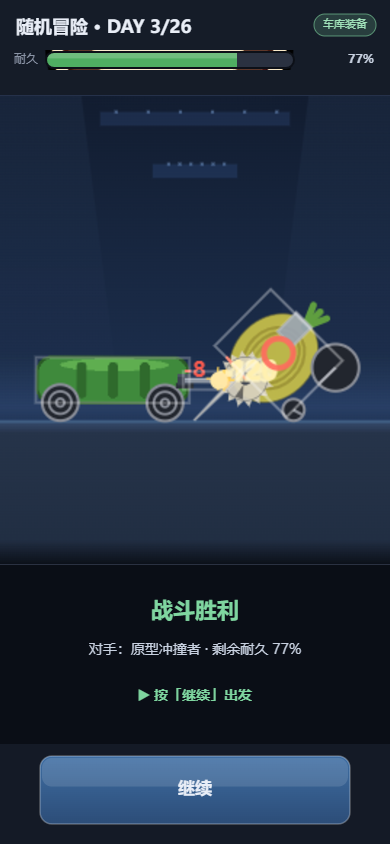
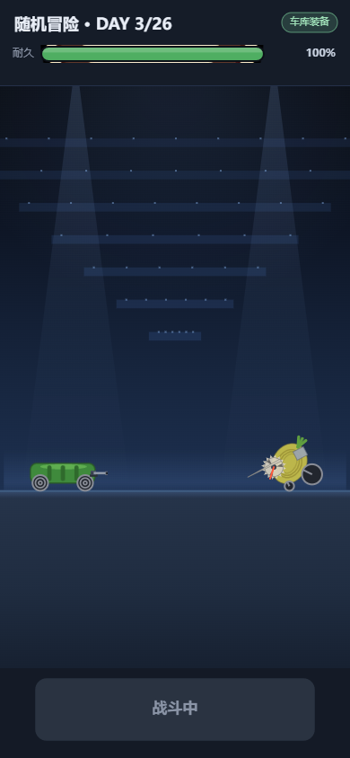
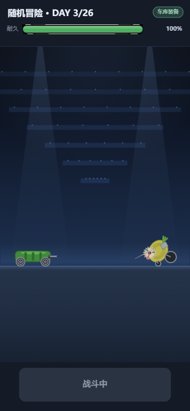

tests/_diag_camera_p0.cjs（ADV_P0_OUT 分目录落盘）·
修复前 = c3b8c80（F5 交付后 HEAD），修复后 = F6 工作树
| 指标 | 修复前 | 修复后 | 说明 |
|---|---|---|---|
| 主体屏宽逐帧最大变化 | 10.03% | 3.06% | 「放大跳变」的直接观感量 |
| 缩放跳变 >5% 的帧数 | 6 | 0 | 6 场各 1 帧（第 5 场 3 帧）→ 全消 |
| 战车屏幕纵向最大逐帧位移 | 23.1px | 0.9px | >6px 的帧：14 → 0 |
| 战车屏幕横向最大逐帧位移 | 9.8px | 3.9px | >6px 的帧：6 → 0 |
| 取景窗 Δcy 单帧最大 | 67.9px | 17.2px | 残余仅出现在第 5 场的竞技场相位切换帧 |
| 取景窗 Δcx 单帧最大 | 20.4px | 7.1px | 同上 |
| 取景窗 Δz 单帧最大 / p99 | 11.71% / 3.55% | 7.84% / 2.40% | 残余 = 正式相机相位切换的同帧补偿 |
| RESULT 主体屏宽变化（均 / 最差） | −31.9% / −34.2% | 0.0% / 0.0% | 战斗末帧 188.0px → RESULT 188.0px |
| RESULT 与末帧 Δzoom | 0.52 | 0.000 | 沿用最后稳定取景 |
| 裁车帧（裁切窗未含双车） | 0 | 0 | F4 的可见性保证未退化 |
| 交战 zoom 峰值 | 1.52 | 1.52 | F4 放大收益未退化 |
同一场战斗的相邻两帧（间隔 1 帧 ≈ 17ms）。左 = 战斗最后画面，右 = 切到战报的第一画面。




改动实质：战斗用自适应裁切（zoom≈1.45）取景，旧实现在 RESULT 退回「原比例铺满」， 于是所有东西一次性缩到 1/1.45；现在 RESULT 直接沿用最后一次战斗的裁切窗，只从上方裁掉一条天空， 车辆像素尺寸与战斗末帧完全相同，纵向仍按地面线锚定（战车仍踩在地上）。


交战段的静态帧差别不大（两版都在 1.00 附近起步）——差别在帧与帧之间：
旧实现在 fit 越过 1.10 那一帧直接跳到 1.11（单帧 +11%），F6 把这段变成 ~0.13s 的斜坡。
这类时间维度差异无法用两张静帧表达，量化证据见指标表「主体屏宽逐帧最大变化」与逐场读数
（metrics.json）。
Active → Warning → Closing 那一帧，
正式相机 cs 一帧变化 +4.5%~+5.3%。合成层为保证双车不被切而同帧跟随，
于是那一帧 Δz 达 5–8%（第 5 场 14s 才会遇到）。实测该帧屏幕主体尺寸只变 −0.3%/+0.4%，
但背景仍会跟着正式相机缩放一次。要彻底消除必须改正式 Runtime 相机 —— Queue 明令禁止，故只记录不改。
zoom ≤ fit 是可见性硬约束（不立刻缩小就会切车），
实测分离段单帧 Δz ≈ 2.8%，由物理分离速度决定，属主动取舍「可见性 > 平滑」。
?f4off=1 / ?d2zoom= 不走自适应裁切，RESULT 仍走历史
blitCover（对照语义，非缺陷）。
完整数据：docs/adventure-camera-stability-f6/ · 报告 REPORT.md ·
指标 metrics.json（analyze.py 可复算）· 原始连续帧 before/strip/、after/strip/